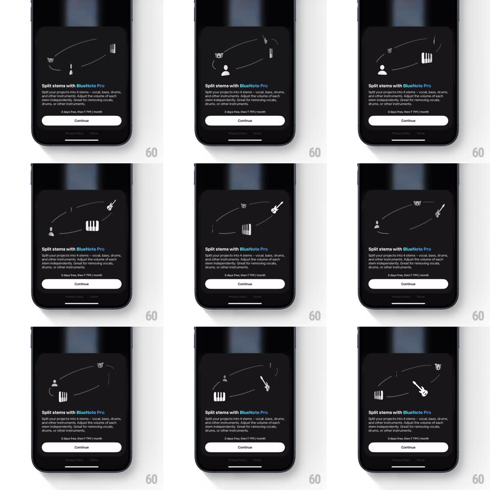

Media
Frame-by-frame

Rebuild this interaction 1:1: BlueNote's Pro upsell sheet - a dark subscription sheet whose hero area hosts a looping pseudo-3D orbit of instrument icons (guitar, piano, mic, drums, vocalist) circling a center point along elliptical paths, above the "Split stems with BlueNote Pro" pitch and Continue button.

Rebuild this interaction 1:1: BlueNote's Pro upsell sheet - a dark subscription sheet whose hero area hosts a looping pseudo-3D orbit of instrument icons (guitar, piano, mic, drums, vocalist) circling a center point along elliptical paths, above the "Split stems with BlueNote Pro" pitch and Continue button. ## Integration Integration: stack-agnostic spec - springs given as stiffness/damping, timed motions as duration + curve; map every value to your framework and animation library of choice. ## Scene Dark bottom sheet over a dimmed app. Top half: the orbital animation stage. Below: "Split stems with BlueNote Pro" (Pro in blue), body copy about splitting projects into 4 stems, "3 days free, then ₹ 799 / month", a white Continue button, and Privacy/Terms links. ## Motion spec Pattern: looping elliptical orbit with depth scaling. - 5-6 instrument icons travel a shared elliptical orbit (wide, ~3:1 aspect) around the stage center, one full revolution ~6s, evenly phase-offset. - Pseudo-3D: icons scale from ~0.6 (back of the orbit) to ~1.1 (front) and fade ~50% at the back; z-order swaps as they pass the front midpoint. - Faint elliptical guide lines (thin white strokes, ~15% opacity) mark 2-3 orbital paths. - Icons are white line glyphs on the dark sheet; they do not rotate - only position, scale, and opacity change. - Text block and Continue button below are static. ## Calibration - Scale/opacity must be pure functions of orbit position - no per-icon timing differences. - The orbit reads as a flat ellipse seen at a tilt; keep vertical travel shallow. ## Reduced motion Static arrangement of the icons along the ellipse; no orbit. ## Don't miss - The guide ellipses are part of the art - without them the motion reads as random floating. - The sheet content (pitch, price, Continue) never moves; the animation lives only in the hero area.